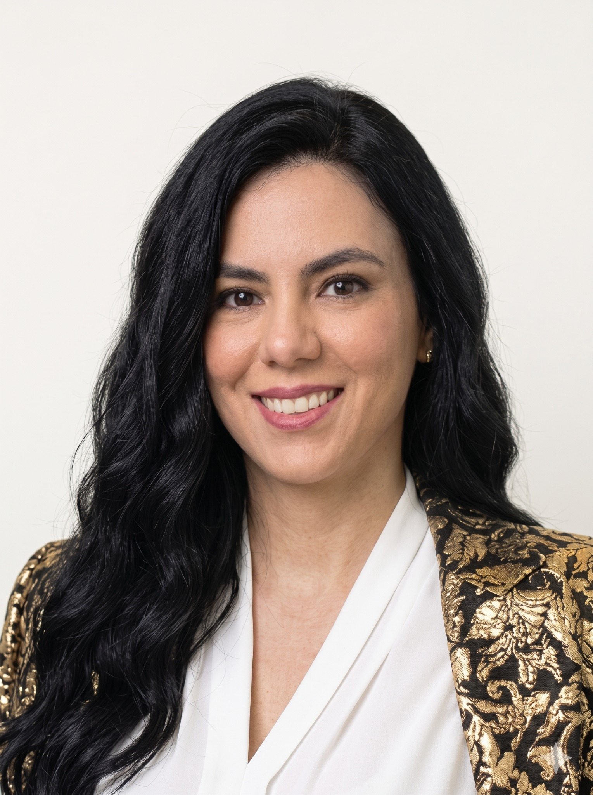

Aprender haciendo ingeniería
Materiales de modelado, experiencias de formación y proyectos con documentación verificable.
Mi contribución. Diseño y acompañamiento docente; la autoría del software estudiantil se identifica por separado.
Ver docenciaPROFESORA · INVESTIGADORA · VENEZUELA
Soy Yaskelly Yedra y conecto la ingeniería de software, los datos y la inteligencia artificial con la formación universitaria y el aprendizaje abierto.
Profesora e investigadora en el Departamento de Computación de la Facultad Experimental de Ciencias, Universidad del Zulia.

Mi trabajo reúne tres espacios que se complementan: el aula, la investigación y la comunidad.
En la docencia, acompaño a estudiantes a formular problemas, construir software y justificar sus decisiones. En la investigación, exploro el desarrollo de sistemas y la relación entre tecnología, organizaciones y participación.
Con YaskCode, organizo recursos y experiencias para que aprender también signifique practicar, construir y compartir.
Conocer mi trayectoria →Materiales de modelado, experiencias de formación y proyectos con documentación verificable.
Mi contribución. Diseño y acompañamiento docente; la autoría del software estudiantil se identifica por separado.
Ver docenciaTrabajos sobre gobierno electrónico, análisis de datos y tecnologías de información.
Mi contribución. Autora o coautora según cada registro; cada ficha enlaza su evidencia.
Ver investigaciónEncuentros tecnológicos y recursos para conectar la universidad con comunidades de práctica.
Mi contribución. Organización de GDG Caracas y participación en iniciativas educativas.
Ver comunidadCampus YaskCode reúne rutas de formación, proyectos, recursos y comunidad. Esta web presenta a la persona detrás de ese ecosistema y las evidencias de su trabajo académico.
Entrar al Campus YaskCode ↗